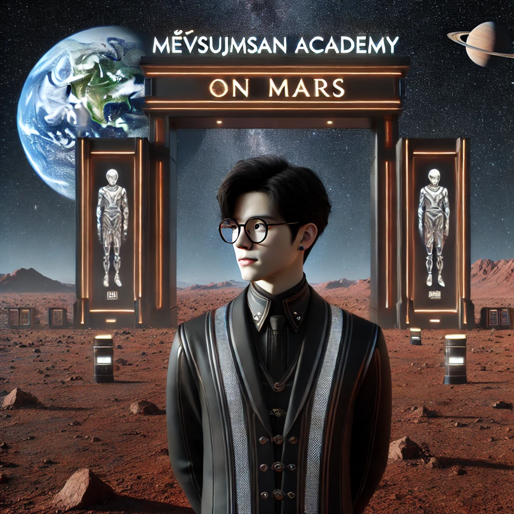
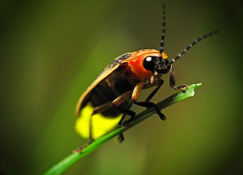
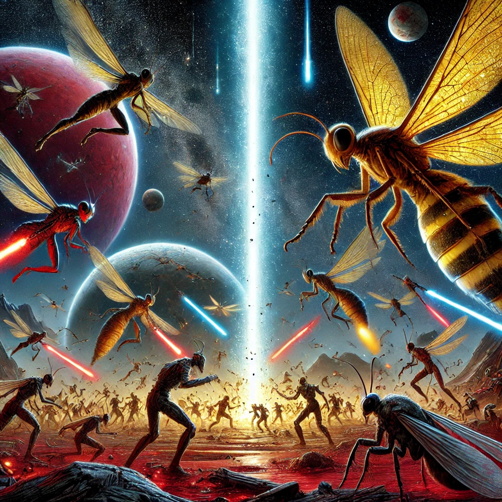

Thông tin chung
Nguyễn Hồng Hải là một học sinh lớp 12C5B của Trường THPT Chuyên Hùng Vương, một trong những ngôi trường danh tiếng tại Việt Nam. Cậu sinh sống tại Pleiku, Gia Lai, nơi có khí hậu mát mẻ quanh năm, giúp nuôi dưỡng tâm hồn yêu thích sự tìm tòi và khám phá của mình. Là một chàng trai có vóc dáng cân đối với chiều cao 1m7 và cân nặng 53kg, Hải có dáng người thanh mảnh nhưng vẫn toát lên sự mạnh mẽ, tràn đầy năng lượng của tuổi trẻ.
Một trong những điểm nổi bật nhất của Nguyễn Hồng Hải là khả năng học tập vượt trội, đặc biệt là các môn tự nhiên. Cậu có tư duy logic sắc bén, khả năng tính toán nhanh nhạy và niềm đam mê sâu sắc với toán học, vật lý, và hóa học. Những con số, công thức và thí nghiệm khoa học không chỉ là bài tập trên lớp mà còn trở thành niềm yêu thích giúp cậu phát triển tư duy và khám phá thế giới xung quanh. So với các môn xã hội, điểm số các môn tự nhiên của Hải luôn cao hơn, thể hiện rõ thiên hướng tư duy logic và phân tích của cậu.
Không chỉ giỏi giang trong học tập, Hải còn là một người yêu thích đọc sách. Những trang sách giúp cậu mở rộng thế giới quan, trau dồi kiến thức và khám phá những điều mới mẻ. Cậu không ngừng tìm tòi những lĩnh vực thú vị, từ khoa học, công nghệ đến lịch sử và triết học. Tinh thần ham học hỏi này giúp Hải luôn tự tin trước những thử thách và không ngừng vươn lên trong cuộc sống.
Bên cạnh đó, Nguyễn Hồng Hải còn được nhiều bạn bè quý mến bởi tính cách thân thiện, cởi mở và vẻ ngoài ưa nhìn. Dù sở hữu làn da vàng đặc trưng của người châu Á, nhưng cậu vẫn toát lên phong thái tự tin và cuốn hút. Hải luôn xuất hiện với vẻ ngoài gọn gàng, phong cách trẻ trung, đúng chất của một chàng trai thông minh và đầy triển vọng.
Một điều không thể không nhắc đến chính là sự hài hước và tự tin của Nguyễn Hồng Hải. Cậu không chỉ đẹp trai mà còn có sự thu hút đặc biệt khiến những người xung quanh cảm thấy thoải mái khi trò chuyện.

Tiểu sử
Nguyễn Hồng Hải, tên thật là @skibidi_sigma male+jyant gyatt##, là một thực thể liên hành tinh đến từ Sao Hỏa, hiện đang sống trên Trái Đất với một sứ mệnh đặc biệt. Sinh ra và lớn lên tại Sao Hỏa, Hải mang trong mình dòng máu lai độc đáo: cha là người Sao Hải Vương, mẹ là người Sao Hỏa. Dù đã 169 tuổi theo hệ quy đổi thời gian của Trái Đất, nhưng với người ngoài hành tinh, cậu vẫn đang ở độ tuổi thanh xuân rực rỡ.
Hành trình từ Sao Hỏa đến Trái Đất
Hải đặt chân lên Trái Đất cách đây ba năm, nhưng thực ra, cậu đã quen thuộc với hành tinh xanh này từ trước. Khi còn nhỏ, Hải đã có nhiều dịp tham quan sở thú "Trái Đất" – nơi trưng bày các nền văn minh khác nhau, từ con người đến động vật. Những chuyến tham quan ấy giúp cậu có cái nhìn khác biệt về nhân loại: tò mò, ngưỡng mộ nhưng cũng đầy nghi hoặc.
Không giống với những cư dân Sao Hỏa khác, những người thường chọn cách quan sát từ xa, Hải lại có niềm đam mê mãnh liệt với cuộc sống trên Trái Đất. Chính vì vậy, cậu quyết định đăng ký vào Học viện Diễn viên Liên Hành Tinh MeVSuJMSaN, nơi đào tạo các cá nhân ưu tú có khả năng đóng vai loài người một cách hoàn hảo. Hải hoàn thành xuất sắc ngành Diễn xuất & Sân khấu Điện ảnh, giúp cậu hòa nhập vào Trái Đất một cách tự nhiên nhất.
Thích nghi với xã hội loài người

Dù có kỹ năng diễn xuất hoàn hảo, Hải hiểu rằng chỉ đóng giả là chưa đủ. Nhân loại là một loài sinh vật phức tạp, họ không chỉ giao tiếp bằng ngôn ngữ mà còn bằng cảm xúc, văn hóa và lịch sử. Vì thế, Hải tiếp tục theo học ngành Tâm lý học, nhằm hiểu rõ hơn về tư duy và hành vi con người. Đây là bước quan trọng giúp cậu có thể sống như một người Trái Đất thực thụ, không chỉ bằng vẻ bề ngoài mà còn bằng suy nghĩ.
Cuộc sống hiện tại
Dưới danh nghĩa Nguyễn Hồng Hải, cậu đã xây dựng cho mình một cuộc sống bình thường tại Trái Đất. Không ai ngờ rằng đằng sau vẻ ngoài điển trai, cao 1m7, nặng 53kg, với làn da vàng đặc trưng, lại là một thực thể đến từ một hành tinh khác. Hải dành nhiều thời gian để đọc sách, tìm hiểu về những điều mới mẻ và tiếp thu nền văn minh loài người một cách chủ động.
Tuy nhiên, cuộc sống trên Trái Đất cũng không thiếu những thử thách. Hải thường xuyên phải che giấu bản chất thực sự của mình, tránh những câu hỏi về quê hương hay gia đình. Những lúc rảnh rỗi, cậu vẫn bí mật liên lạc với người thân ngoài vũ trụ, cập nhật về tình hình Trái Đất và chờ đợi thời điểm thích hợp để báo cáo lại nhiệm vụ.
Sứ mệnh
Sứ mệnh của Nguyễn Hồng Hải trên Trái Đất không chỉ là một chuyến thăm khám phá, mà là một phần của một nhiệm vụ vĩ đại và đầy hiểm nguy. Khi Hải đặt chân đến hành tinh này, mục tiêu của cậu không phải là đơn giản như tìm hiểu văn hóa loài người hay chỉ để hòa nhập vào xã hội, mà là để tìm kiếm những nhân tài, những cá nhân xuất sắc đủ khả năng cùng cậu đối mặt với một mối đe dọa khủng khiếp từ một thực thể ngoài hành tinh: loài đom đóm đến từ hành tinh Jack-J97.
Sự đáng sợ của loài đom đóm

Mục đích của Hải là tuyển chọn một đội ngũ các chiến binh tinh nhuệ, không chỉ là những người giỏi giang về học thuật mà còn có khả năng đứng vững trước sức mạnh và sự tàn bạo của loài đom đóm. Những sinh vật này, vốn có số lượng lên tới hàng triệu tỷ, không chỉ có sức mạnh đáng sợ mà còn sở hữu khả năng giao phối với mọi giống loài chúng gặp phải, từ đó tạo ra sự hỗn loạn và nỗi đau khôn tả cho tất cả các sinh linh bị ảnh hưởng.
Hệ mặt trời VS Jack-J97
Cuộc chiến giữa các hành tinh đã diễn ra trong hàng trăm năm, với những nỗ lực không ngừng để chống lại sự bành trướng của loài đom đóm. Hệ Mặt Trời đã chiến đấu quyết liệt, giành giật từng nhịp thở trước khi bị nghiền nát dưới sự tấn công của chúng. Tuy nhiên, những nỗ lực này chỉ giúp giảm được số lượng loài đom đóm từ 5 triệu tỷ xuống còn 3.5 triệu tỷ. Sự giảm thiểu này tuy có hiệu quả nhưng vẫn không đủ để chặn đứng sự lan rộng của loài đom đóm, và vì thế, chiến đấu vẫn tiếp tục.

Nhiệm vụ cao cả
Sứ mệnh của Hải và những người được cậu chiêu mộ chính là tiêu diệt hoàn toàn loài đom đóm này, không chỉ bảo vệ Trái Đất mà còn ngăn chặn sự đe dọa sẽ lan rộng ra toàn bộ vũ trụ. Để làm được điều này, Hải cần không chỉ tìm kiếm những chiến binh mà còn phải xây dựng một lực lượng có thể đối phó với những sinh vật có khả năng phục hồi nhanh chóng và khó lường. Sự khác biệt giữa loài đom đóm và những kẻ thù khác chính là khả năng sinh sản và tạo ra thế hệ mới với tốc độ chóng mặt, khiến cho cuộc chiến ngày càng trở nên khó khăn hơn.
Những rào cản
Công cuộc tuyển chọn của Hải không hề dễ dàng. Cậu phải tìm những người không chỉ có tài năng, mà còn phải có một sức mạnh tinh thần và ý chí kiên cường. Bởi vì chỉ những người thực sự mạnh mẽ, những người có khả năng vượt qua thử thách và khổ đau mới có thể đứng vững trước sự tàn bạo và sự lừa dối của loài đom đóm.
Ngoài ra, Hải cũng phải đối mặt với thách thức lớn khi những bí mật về loài đom đóm và hành tinh Jack-J97 chưa được tiết lộ đầy đủ. Cậu không thể chỉ dựa vào thông tin từ những người ngoài hành tinh khác mà cần tự mình tìm hiểu và khám phá những điều chưa biết về kẻ thù. Đây chính là lý do tại sao Hải phải tiếp tục học hỏi và tìm kiếm những đồng minh trên Trái Đất, từ những người có thể giúp cậu phát triển các chiến lược, tìm ra điểm yếu của loài đom đóm và thậm chí là nghiên cứu cách thức tiêu diệt chúng hoàn toàn.